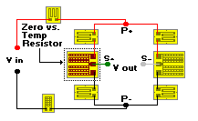

Zero Shift with Temperature Change
Zero Shift with Temperature ChangeZero Shift with Temperature Change
Circuit Refinements command
General Considerations
Zero Shift with Temperature Change
Inputs
 Output at High and Low Temperatures
Output at High and Low Temperatures
The mV/V output of the transducer under test is measured at rest (unloaded) at two different, stable temperatures. The actual temperatures to be used are not specific, they need only be separated by a significant amount. For example, a transducer calibrated to operate over a 0 to +150 deg F range would normally use 0�F and room (ambient) temperatures, or values reasonably close, for the calculation of the required zero shift correction resistor.
Ideally, the difference between the �low temperature� and the �high temperature� would be as large as practicable for the temperature range of the transducer. The minimum difference recommended is 50 deg F.
 Resistor Material
Resistor Material
Selecting the pull down arrow provides a choice of three different resistor materials for use as the zero vs. temperature resistor. TCR (temperature coefficient of resistance) is automatically filled in. The TCR is given in %/100 deg F, measured as a chord slope over a +50 to +150 deg F range.

Bridge Resistance
This is the resistance value as measured between P+ and P- illustrated in the drawing. For bridges using four gages of equal resistance value, the bridge resistance and gage resistance will be essentially equal.
Outputs
 After entering all six variables, selecting the COMPUTE BUTTON displays the value of the compensation resistor, and indicates the bridge arm into which it needs to be inserted.
After entering all six variables, selecting the COMPUTE BUTTON displays the value of the compensation resistor, and indicates the bridge arm into which it needs to be inserted.
Once a value is displayed the user can select the resistor type. For copper, there is a choice of using an E01 adjustable ladder resistor or wire. For Balco or nickel, only the wire calculation is available.
E01 Resistors
If the E01 resistor is chosen, selecting the CUT BUTTON displays the E01 resistor adjustment dialog. This program permits adjusting the E01 resistor �on paper� to obtain an estimate of the number and placement of ladder cuts prior to working on the actual resistor.
At the top of the adjustment dialog are inputs labeled Starting Resistance R1-2 and R2-3. For best accuracy in predicting the effect of each ladder cut it is desirable to enter the actual value from the resistor to be cut. For copper E01 resistors, this value is quite low and not easily measured. Therefore, for the copper E01, it is acceptable to enter the estimated uncut value (from Micro-Measurements CatalogTC-116-4), which is 0.5 x 8% = 0.04 ohms. This value should be entered for both R1-2 and R2-3.
Cutting the ladder steps by clicking on each step (beginning at the bottom �rung� and progressing upward) with the mouse pointer pointed at the center of each ladder step will calculate a new resistance value after each cut. It should be remembered that it is the difference in resistance between sides R1-2 and R2-3 that is important to match to the required value for compensation. If the difference in resistance becomes too large, it is possible to cut on the opposite-side ladders to reduce the difference. Cutting the shorting bar is required to reach Rmax. Pressing the restore button replaces the cut steps and resets the calculated resistance to the starting resistance.
Wires
Choosing the wire table instead of the E01 resistor and then pressing the CUT BUTTON displays a wire table for Balco, copper or nickel wire depending on which wire type has been selected. The required compensation resistor value is also displayed at the top of the wire table. To calculate the length of wire needed to achieve this compensation resistor value, highlight a particular wire size (from 30 AWG to 50 AWG) and press the COMPUTE BUTTON. The required length of wire is displayed.
Hint: If you are using copper wire and the length necessary for compensation is too long to be convenient, try Balco or nickel instead. Their higher TCR and resistivity values will result in shorter wire length requirements.